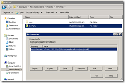
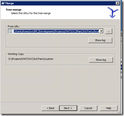

N2CMS Meet VWT2OC: Day 1 – Project Setup
It’s on! I’ve got 8 days to overhaul the Volkswagen Type 2 Owners Club (www.vwt2oc.com) before work beckons again…. A month ago I decided to rebuild the existing website using n2cms. Unfortunately, in that time when I was going to research best practise and get some test sites working….I’ve done nothing. So, I’ve decided to incentivise myself by blogging my progress….
My Basic Plan of Action is:
- Day 1 – Project Setup
- SVN Configuration
- Create Build Script to compile N2CMS for project
- Integrate Forum Add On with n2cms
- Day 2 – N2CMS Configuration
- Integrate the Membership Provider from n2cms/forum/legacy vwt2oc
- Construct basic site structure (homepage/articles/forum/gallery/events calendar/etc)
- Create VWT2OC basic theme
- Day 3 – VWT2OC Membership Model
- Implement Club Member/Membership Data Model in n2cms
- Basic Admin Screens for Members
- Initial member import routine from current site
- Day 4 – My Account and Personalization
- Improve member import routine
- Membership Reports/Maintenance from with N2CMS
- Initial ‘My Account’ page for front end
- Day 5 – End User Approval/eCommerce
- Deploy to temporary hosted location for client approval of WIP
- Import Membership Purchasing Mechanism for legacy app
- Integrate NoChex/Paypal payment gateways
- Day 6 – Review of Progress
- Review functionality and prioritise urgent issues with work so far
- Day 7 + 8 – Getting a functional site
Ha! And work thinks I’ve got a week off for a Holiday!
Version Control - The Beginnings of a Project
After spinning up a nice fresh development environment VM, first job is to configure the version control for the project. There are a few tenets that I hold by, the repository should include all of the code components and upgrading them should be simple. I’m using SVN (with Tortoise SVN) as my weapon of choice (although others can do the job just as well).
My basic repository layout is essentially:
- Main
- 3rd Party
- Dependent Product 1
- Dependent Product 2
- Tools
- Utility 1
- Project Folders
- Project Visual Studio Solution (.sln)
- Build Scripts
- 3rd Party
- Branches
As I’m building on an open source project which is actively being developed (and I know I will need to customize to fit my purposes), I need to be able to quickly merge updated from the two development streams. Which is a job for branching.
So, my approach is to create an exact copy of the n2cms repository within my 3rd Party folder and then branch it into another folder. This means that when I decide to update to a later version I can use subversion to manage merging the changes from the update to any customizations that I’ve added to ‘my’ version. In SVN parlance this is called using ‘Feature Branches’ – one for official changes and one for my customizations on top.
T’is a bit complicated now but it will simplify upgrading the codebase later.
By maintaining this separation of the n2cms base install, my customisation to the base install and finally my VWt2OC project specific version allows me to treat n2cms as an infrastructure dependency and should reduce the complexity of the actual VWT2OC specific code.
Steps to Configure the Repository
- Create new repository space (<svnrepository>/Projects/VWT2OC)
- Create ‘Main’ branch within SVN
- Create ‘3rd Party’ folder within Main Branch
- Checkout ‘Main’ to local folder (d:\Projects\VWT2OC)
- Add the following ‘svn:external’ attribute to the ‘3rd Party’ folder (this only works if the target repository is also SVN!):
n2cms -r1351 http://n2cms.googlecode.com/svn/trunk/
 - Run ‘Update’ on 3rd Party folder to get contents of linked n2cms repository locally
- ‘Export’ the contents of ‘3rd Party\n2cms’ to ‘3rd Party\local’ (this will create a ‘3rd Party\local\n2cms’ folder)
- Commit the duplicate, pristine n2cms repository locally
- Branch from ‘3rd Party\local’ to ‘3rd Part\custom
- Check in my ‘customizations’ branch
And the future upgrade procedure will be:
- Ensure everything is checked in and working locally
- Amend the ‘svn:external’ attribute on 3rd Party to point to later revision (in this case 1355)

- Run ‘Update’ on ‘3rd Party’ to update local n2cms repository copy
- ‘Export’ contents over the top of the copy in ‘3rd Party\local\n2cms’
- Commit changes to ‘3rd Party\local’
- ‘Merge’ the changes from ‘3rd Party\local’ to ‘3rd Party\custom’ (reintegrate a branch)
 - Resolve Conflicts and validate the build
- Check in changes to ‘3rd Party\custom’
- ‘3rd Party\custom’ should now contain an updated n2cms install with all of my customizations intact.

{kind=link}
{kind=link}
If you’re not familiar with svn or branching this looks very daunting – but in practise this is just a couple of clicks. A much more maintainable approach than manually merging in fixes.
Build Script for Base Project
Ok, so I’ve got a neat separation between my code-to-be and it’s dependencies, but I still want to be able to leverage what’s there easily. I don’t want to complicate my project solution with multiple versions of n2cms (like I’ve done in the repository!) so, I need a quick’n’dirty batch file to handle building the dependencies and deploying the updates to my project.
Fortunately, n2cms has some excellent deployment scripts already which I can leverage and with a bit of reuse from my CodeBehindRemover (within the ‘Tools’ folder) I can create a compiled template project:
1: @@echo off
2: cmd /c "%programfiles(x86)%\Microsoft Visual Studio 9.0\VC\vcvarsall.bat" &
3: Echo Updateing Compiled N2CMS
4: cd "3rd Party\custom\n2cms\build"
5: cmd /c "build.bat /target:PrepareDependencies" &
6: cmd /c "build.bat"&
7: cmd /c "..\..\..\..\Tools\CodeBehindRemover\CodeBehindRemover /i:..\src\\wwwroot /o:..\..\N2.Templates.Compiled /e:ascx,aspx,master,asmx,ashx" &
8: cmd /c "robocopy ..\src\wwwroot ..\..\N2.Templates.Compiled /XD .svn obj /XF *.cs *.ascx *.aspx *.master *.asmx *.ashx *.csproj *.sln *.suo *.user *.cache /S" &
9:
10: cmd /c "robocopy ..\..\N2.Templates.Compiled\bin ..\..\N2.Templates.Compiled.bin /XD .svn /MOVE" &
This results in a new folder in ‘3rd Party\custom’\ called ‘N2.Templates.Compiled’ which contains all the UI parts of the project, the compiled libraries and the example web.config. All of the c#, and solution files have been removed ready for importing into my new project.
To do this, I create a new Web Application Project (‘Website’) in my VS solution called website and delete all of the default files. I then close VS and rename the folder (‘_Website’). With Tortoise SVN, I branch ‘3rd Party\custom\N2.Templates.Compiled’ into to \Website, commit the change and then move the Website.csproj file from ‘_Website’ into the folder. Reopening the solution, will now allow me to simply expand the project and select ‘Include All Files’.
The bin folder is moved to a different folder (N2.Templates.Compiled.Bin) to prevent confusion when branching the templates so I can simply add references to the website project from this folder.
When the project builds successfully (on the first attempt – YES!) I deleted the temporary ‘_website’ folder and tested that the sample n2cms template site ran correctly from my stripped down deployment.

Result.
Integrating the Forum Add On
The forum add on is downloaded from the n2cms addon page (I got v1.0.1). As this is another non-trivial 3rd Party dependency, deployment will follow a similar routing to n2cms itself so I can easily upgrade the base version and keep track of any customisations.
- Unzip download into ‘3rd Party\Local\Forum’
- Commit change
- Merge ‘3rd Party\local’ to ‘3rd Party\Custom’
- Commit change
There are a couple of modifications that need to be made to the project before going any further…
- Delete the bin folder from ‘3rd Party\custom\forum\src\Forum’ (and set svn to ignore the folder)
- Open the solution and remove the existing references for N2.dll, N2.Templates.dll and yaf.dll
- Replace references with links to the libraries in the ‘3rd Party\custom\forum\lib’ folder
This is needed as the provided N2.dll and N2.Templates.dll are considerably older than the current n2cms version and we’ll need to be dynamically replacing them with each update build.
To get the addon deployed to my base website I updated the build script:
1: @@echo off
2: cmd /c "%programfiles(x86)%\Microsoft Visual Studio 9.0\VC\vcvarsall.bat" &
3: Echo Updateing Compiled N2CMS
4: cd "3rd Party\custom\n2cms\build"
5: cmd /c "build.bat /target:PrepareDependencies" &
6: cmd /c "build.bat"&
7: cmd /c "..\..\..\..\Tools\CodeBehindRemover\CodeBehindRemover /i:..\src\\wwwroot /o:..\..\N2.Templates.Compiled /e:ascx,aspx,master,asmx,ashx" &
8: cmd /c "robocopy ..\src\wwwroot ..\..\N2.Templates.Compiled /XD .svn obj /XF *.cs *.ascx *.aspx *.master *.asmx *.ashx *.csproj *.sln *.suo *.user *.cache /S" &
9:
10: ECHO Deploying Forum to Compiled Template
11: cmd /c "robocopy ..\src\N2.\wwwroot\bin ..\..\Forum\lib N2.Dll N2.pdb N2.Templates.*
12: cd ..\..\Forum\src
13: cmd /c "msbuild Forum.sln" &
14: cmd /c "..\..\..\..\Tools\CodeBehindRemover\CodeBehindRemover /i:Forum /o:..\..\N2.Templates.Compiled /e:ascx,aspx,master,asmx,ashx" &
15: cmd /c "robocopy Forum ..\..\N2.Templates.Compiled /XD .svn obj /XF *.cs *.ascx *.aspx *.master *.asmx *.ashx *.csproj *.sln *.suo *.user *.cache /S" &
16:
17: cmd /c "robocopy ..\..\N2.Templates.Compiled\bin ..\..\N2.Templates.Compiled.bin /XD .svn /MOVE" &
18:
19: cd ..\..\..\..\
This takes care of updating the lib references in the forum project and deploying the contents of the add on into the ‘N2.Templates.Compiled’ folder.
When then build is complete, commit the ‘3rd Party\custom’ folder and then merge the updates from ‘3rd Party\custom\N2.Templates.Compiled’ into ‘\Website’. Add the missing references and files to the project and then it’s two quick amendments to the web.config:
1: <!-- Register YAF section in configuration\configSections and reference the provided external config file-->
2: <configSections>
3: <section name="yafnet" type="yaf.SectionHandler,yaf" />
4: </configSections>
5:
6: <!-- Yet Another Forum Configuration -->
7: <yafnet configSource="yafnet.config" />
The ‘Forum’ content type should now show up within the Admin interface:
{kind=link}
Creating a quick forum reveals another issue to resolve…the masterpage reference has changed…so in ‘Website\Forum\UI\Views\aspx’ replace the MasterPageFile attribute with ‘~/Templates/UI/Layouts/Top+SubMenu.Master’. The YAF installation script now appears…but that’s a job for tomorrow!
Phew. Objectives for Day 1 - Complete!